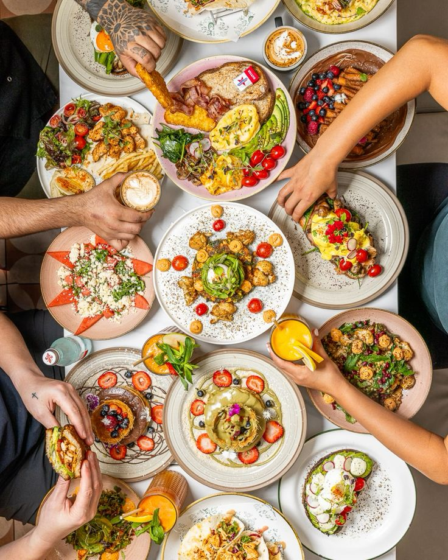
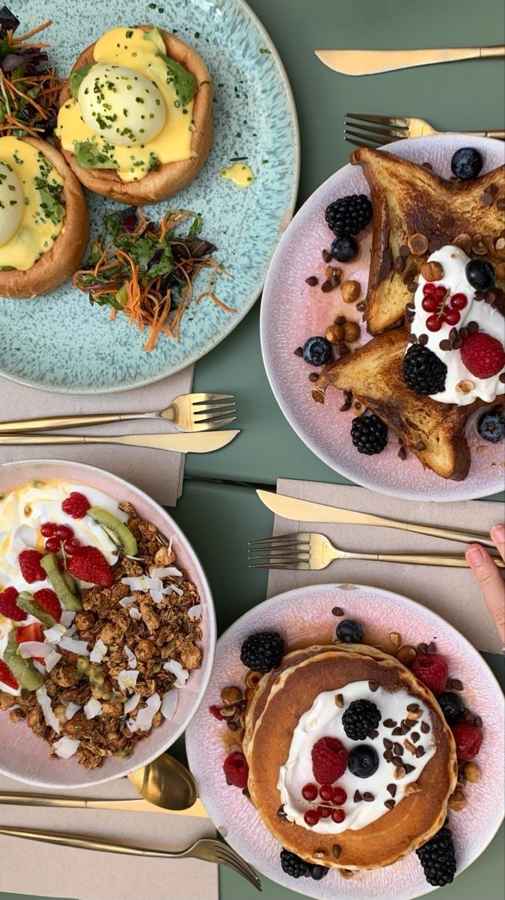

Sección 1: Comidas Saladas

La comida salada abarca una gran variedad de platillos alrededor del mundo, desde guisos tradicionales hasta opciones rápidas y modernas. Se caracteriza por el uso de ingredientes como carnes, vegetales, especias y condimentos que resaltan su saborEn cada cultura, la combinación de ingredientes y técnicas de cocción da como resultado experiencias gastronómicas únicas, que pueden ser reconfortantes, exóticas o innovadoras.
Variedad de Comida
| Comida |
País |
Ingredientes Principales |
Método de cocción |
Tiempo de preparación |
| Paella |
España |
Arroz, Mariscos, Verduras |
Hervir, Freir |
45 minutos |
| Pizza |
Italia |
Masa, Tomate, Queso |
Hornear |
1 hora |
| Ramen |
Japón |
Fideos, Caldo, Cerdo |
Hervir |
30 minutos |
| Tacos |
México |
Tortillas, Carne, Verduras |
Freir |
30 minutos |
| Fin de la lista de comidas |
Sección 2: Postres

Los postres son el toque dulce perfecto para finalizar cualquier comida. Desde pasteles y helados hasta dulces tradicionales, cada país tiene sus propias especialidades. Los ingredientes más comunes incluyen azúcar, chocolate, frutas y cremas, creando una infinidad de combinaciones deliciosas. Su textura y sabor pueden variar desde crujientes hasta suaves y esponjosos, ofreciendo una experiencia indulgente para el paladar.
Tipos de Postres
| Nombre del Postre |
Origen |
Sabor Predominante |
Textura |
Ocasión Especial |
| Pastel Tres Leches |
México |
Dulce y cremoso |
Esponjosor |
Cumpleaños |
| Panna Cotta |
Italia |
Vainilla o frutas |
Suave y gelatinosa |
Suave y gelatinosa |
| Baklava |
Turquía |
Dulce con frutos secos |
Hoja crujiente |
Bodas y fiestas |
| Tarta Tatin |
Francia |
Dulce y caramelizado |
Crujiente y suave |
Celebraciones |
| Mochi |
Japón |
Dulce y ligeramente ácido |
Masticable y suave |
Año Nuevo |
| Fin de la lista de comidas |
Sección 3: Conejos

Los conejos son pequeños mamíferos conocidos por sus largas orejas, su pelaje suave y su carácter juguetón. Se encuentran en diversas partes del mundo y pueden vivir tanto en la naturaleza como en hogares como mascotas. Son animales muy sociables y curiosos, con una dieta basada principalmente en heno, verduras y frutas. Su comportamiento incluye saltos energéticos, escarbar y lamer como muestra de afecto.
Conejitos
| Raza de Conejo |
Tamaño |
Tipo de Pelaje |
Esperanza de Vida |
Personalidad |
Cuidados Especiales |
| Holland Lop |
Pequeño |
Corto y suave |
7-10 años |
Juguetón y sociable |
Espacio para saltar y jugar |
| Angora Inglés |
Mediano |
Largo y sedoso |
7-12 años |
Tranquilo y cariñoso |
Cepillado diario para evitar nudos |
| Cabeza de León |
Pequeño |
Largo y abundante |
7-10 años |
Cariñoso pero tímido |
Cepillado frecuente y socialización diaria |
| Mini Lop |
Pequeño |
Suave y corto |
7-10 años |
Activo y afectuoso |
Juguetes para estimulación mental |
| Fin de la lista de comidas |